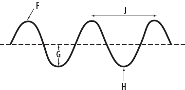
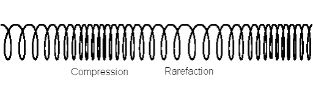
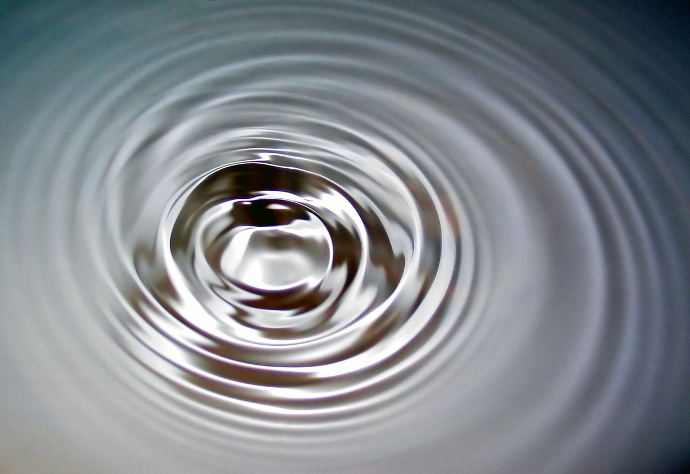

Elvin Rosic | 2020
There are three types of waves: transverse, longtitudinal, and surface.
Transverse:
Transverse waves are basic. They form from some kind of mechanical motion, such as a vibration. The primary characteristics of a transverse wave are the resting point, crest, trough, wavelength, amplitude, and frequency (in hz).
Longtitudinal:
Longtitudinal waves are similar to transverse waves because they have an amplitude, resting point, etc; except the wavelength and frequency is not constant. The frequency alternates between low and high. When the wave's frequency gets higher, it is called a compression. Alternatively, when the frequency gets lower it's called a rarefaction.
An good example of an object that represents a longtitudinal wave is a spring
Surface:
Surface waves are simply waves that separate two things, like an ocean wave. Their characteristics include the crest, trough, etc.

F: Crest - the highest point of the wave
H: Trough - the lowest point of the wave
G: Amplitude - the energy of the wave
J: Wavelength - the length from one wave to another

The area which the waves are close together is the compression.
The more "loose" area is the rarefaction

The surface wave creates a separation between the water and the air.
Notice the compressions and rarefactions in the image.
Frequency: the rate of how often something happens within a certain timespan.
Hertz: measure of how many waves pass through within a second.
Crest: the highest point in a wave
Trough: the lowest point in a wave
Resting Point: a line in equidistance from the crest and trough; the middle of the wave.
Wavelength: the length from one wave to the next
Rarefaction: the lower frequency area of a wave
Compression: the higher frequency area of a wave